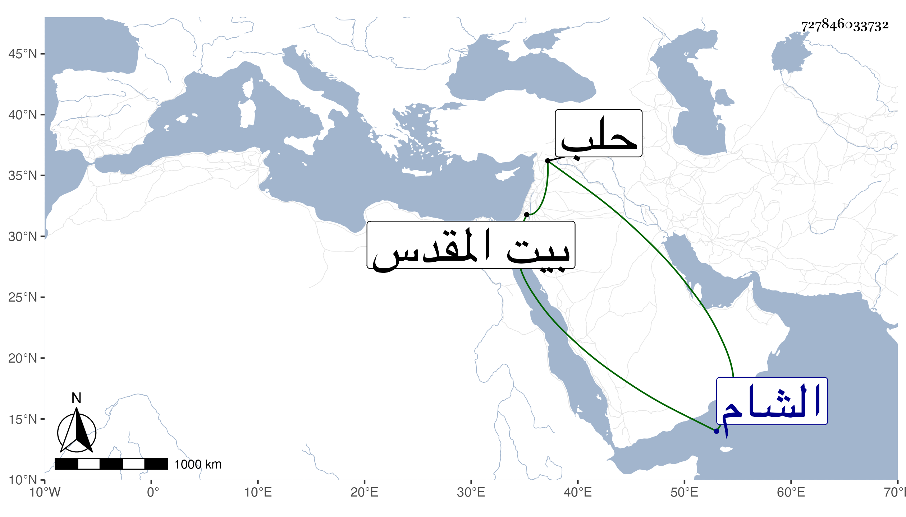

0902Sakhawi.DawLamic.ITO20230111-ara1.EIS1600.727846033732
Biography ID: 727846033732
442
محمد بن محمد بن عمر الشرف بن النجم بن عرب ابن عم الذي قبله ووالد النجم محمد الآتي . ذكر لي ابنه أنه حفظ التنبيه وتقدم في الشروط والإسجالات وتكسب بالشهادة ، وحج مع الرجبية في سنة إحدى وخمسين وزار بيت المقدس ودخل الشام وحلب صحبة إينال الجكمي وكان إمامه واختص به ولذا كان يخاف بعد مخامرته من الظاهر جقمق واختص بأرغون مملوك عبد الباسط وكان مع شيخوخته يكثر اللعب بالشطرنج . مات في شوال سنة أربع وثمانين عن أزيد من تسعين سنة أو نحوها .
